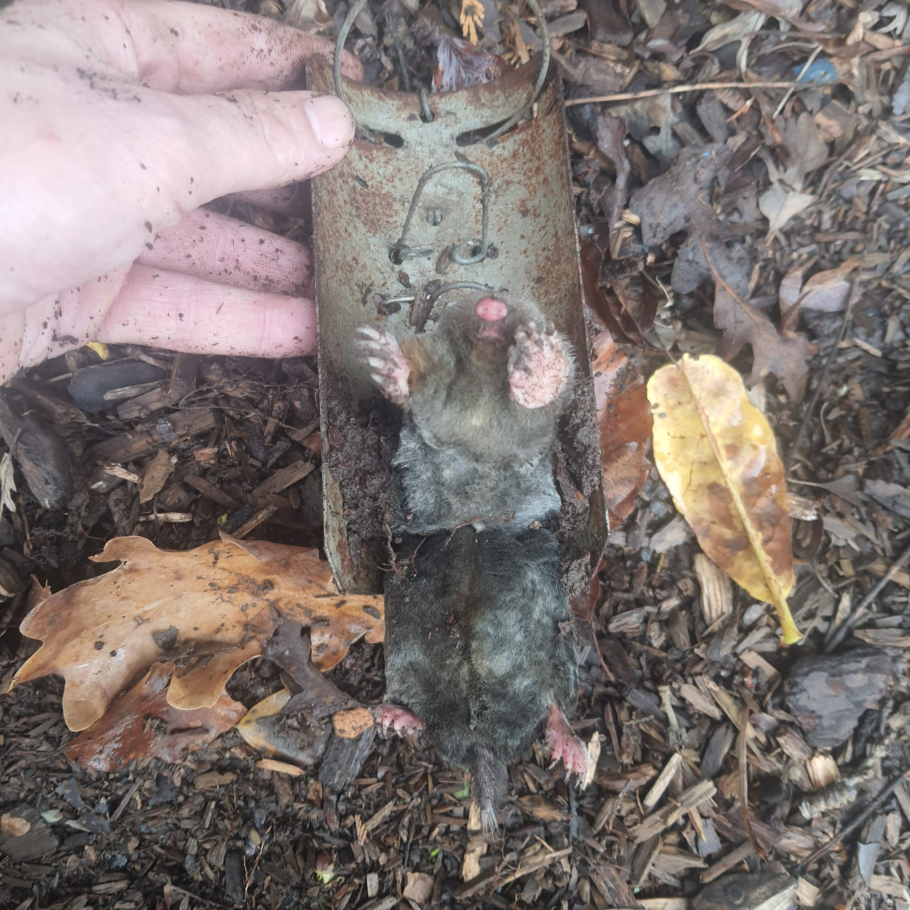

Professional Services

Specialist Mole Trapping
We use traditional, professional trapping methods that are 100% poison-free. Safe for your pets, horses, and livestock. Guaranteed clearance for domestic gardens, estates, and silage fields.

Agricultural Pest Control
Red Tractor friendly rodent control and wasp nest removal. We provide discreet, effective solutions for farms and rural businesses across the Valleys and Mid Wales.